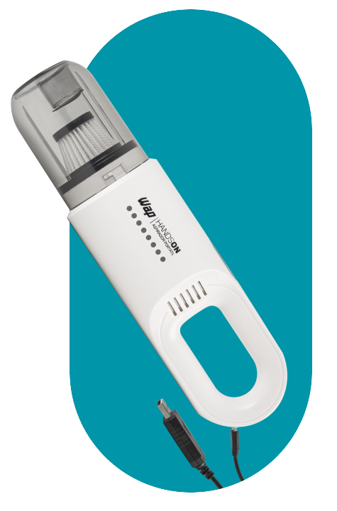
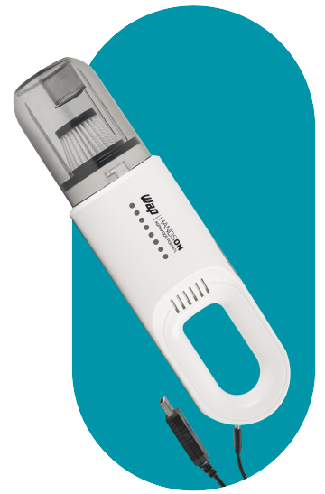
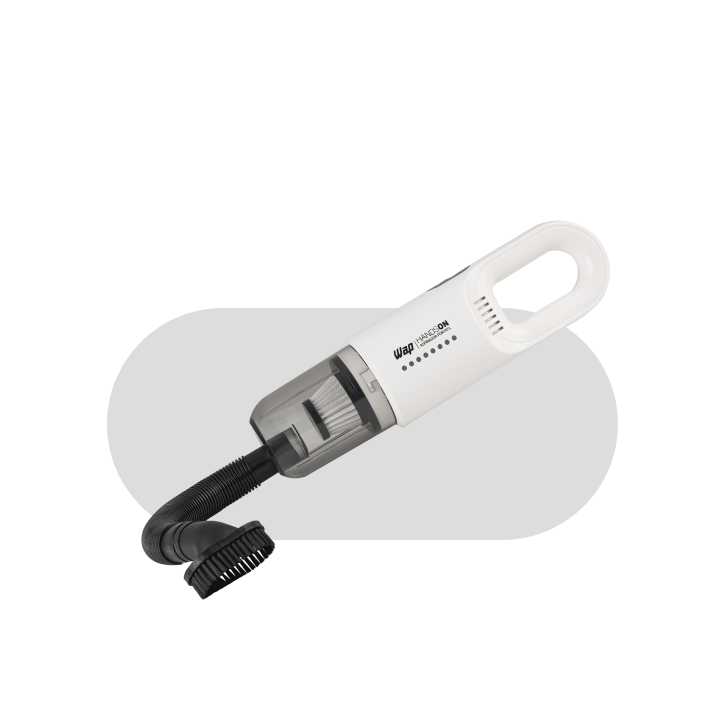
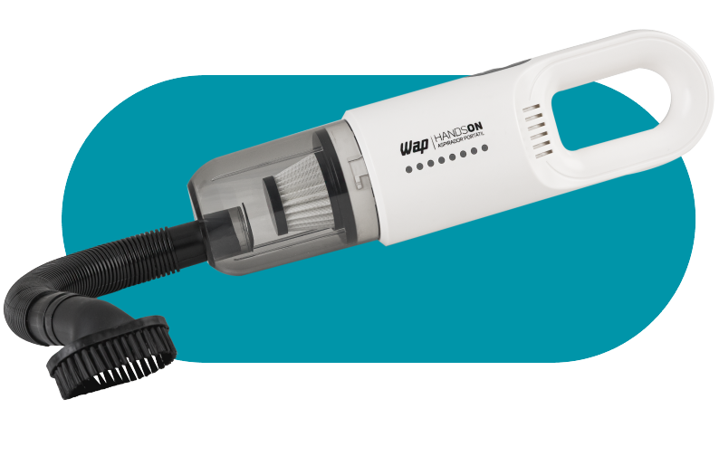
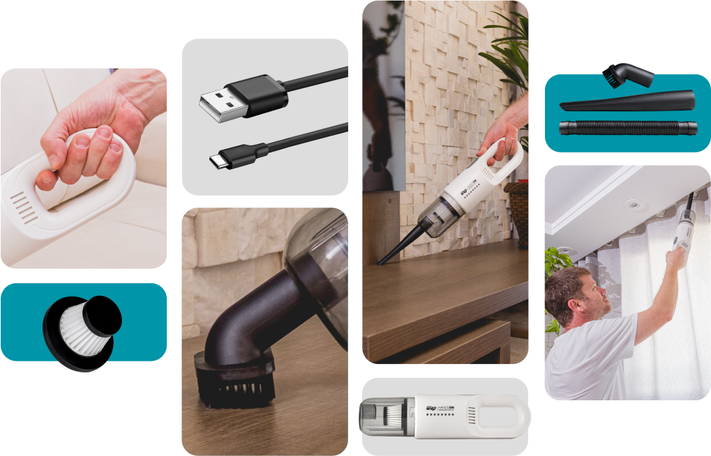
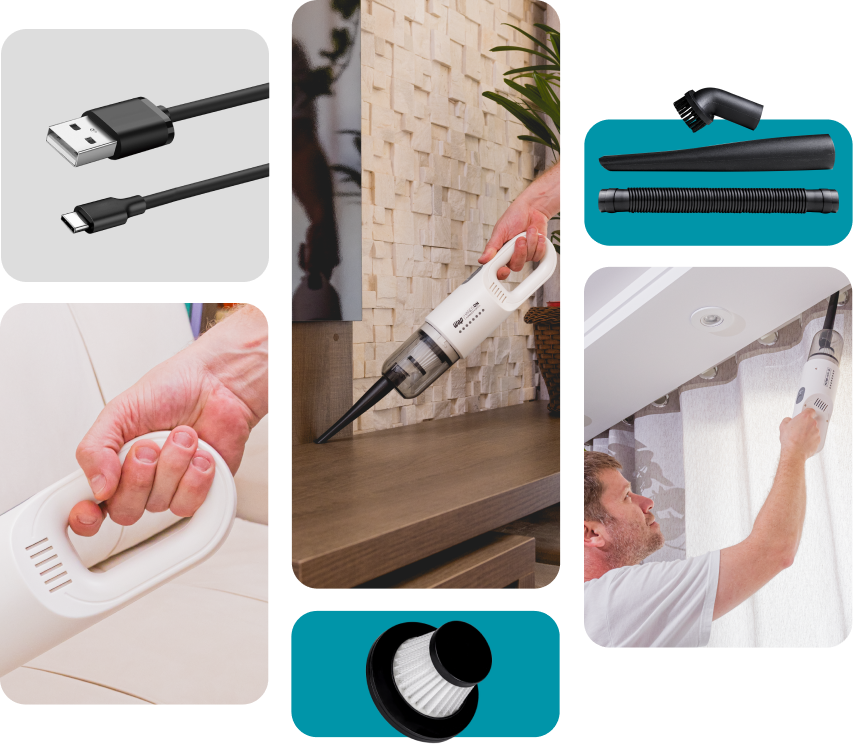
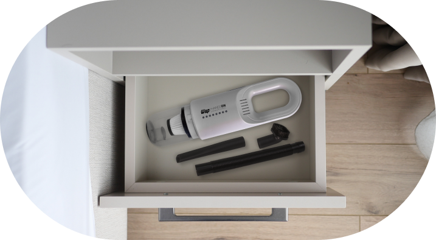
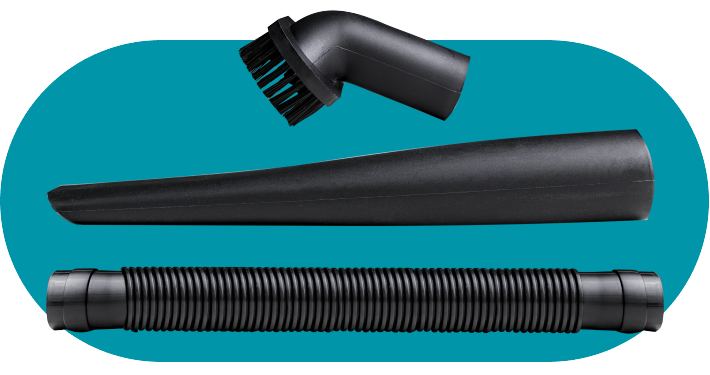

Aspirador Portátil
Wap Handson
Alcance um novo nível de praticidade na limpeza
Remove a sujeira sem esforço, chegando a todos os cantos e locais de difícil acesso. Além de proporcionar a higienização da sua casa com total liberdade de movimentos, o aspirador sem fio também permite a limpeza de estofados e objetos com tranquilidade e eficiência.
Proporciona longa duração e alto desempenho para uma limpeza eficiente e sem interrupções.
Retém as impurezas do ar para garantir que seu ambiente fique livre de poeira, ácaros e alergênicos.


Alcance todos os cantos, debaixo de móveis, em locais elevados e explore os espaços mais difíceis com facilidade.
É leve e portátil, pode ser levado com você para qualquer lugar, sem ocupar muito espaço.
Conecte, utilize e limpe


Autonomia na palma das mãos
Com alta performance garantida em um modelo fácil de usar e transportar, o Wap Handson possui um ótimo desempenho na faxina. A bateria de lithium proporciona longa duração, com muitos ciclos de carga e descarga. Além disso, permite recarga rápida e baixa taxa de autodescarga.
Compatível com diferentes dispositivos, é fácil encontrar uma fonte de energia USB para recarregar seu Aspirador de Pó Sem Fio Wap Handson. Basta conectar o cabo USB à fonte de energia para se livrar de poeiras e outros detritos, em qualquer lugar, sempre que precisar.

Acessórios
Indispensáveis

O bico escova é ideal para superfícies, como estofados e tapetes, garantindo a remoção da sujeira.
O bico canto alcança áreas estreitas e de difícil acesso, como frestas entre os bancos e cantos do painel.
A mangueira flexível possibilita uma limpeza versátil em locais de difícil alcance para os bicos convencionais.